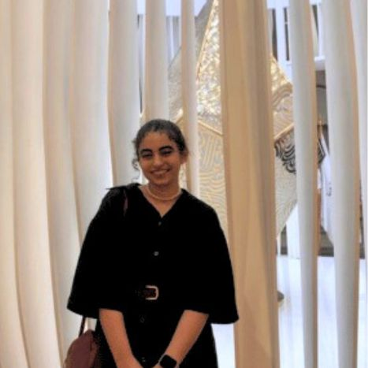

About Me
Ines Hammoumi, born on July 21, 2004, is the visionary director of The Art Spot gallery, which she established in 2022 in the vibrant city of Rabat. Her profound passion for the arts is reflected in her extensive background, holding a Bachelor's degree in Art History and having amassed significant experience as a curator.Ines's expertise in curating has enabled her to craft exhibitions that not only showcase artistic excellence but also engage and inspire the community.

In addition to her influential role in the art world, Ines is also an accomplished theater actress. Her involvement in theater has enriched her understanding of performance art, adding depth to her curatorial projects. Her ability to convey emotion and narrative through acting complements her curatorial work, allowing her to create more immersive and emotive art exhibitions.
Currently, Ines is pursuing advanced studies in Textile Production Management at the esteemed ESITH, further broadening her expertise in the creative industries. This multidisciplinary approach enriches her professional endeavors, combining art, design, and management skills. Fluent in Arabic, French, and English, Ines navigates the international art scene with ease, building connections and fostering cultural exchange.
Ines's journey in the arts is marked by her dedication to promoting cultural heritage and contemporary creativity. Her role as a director, curator, and actress allows her to bridge various forms of artistic expression, making a lasting impact on the cultural landscape. Through her work, Ines continues to inspire and lead, bringing art closer to the hearts of people in Rabat and beyond.